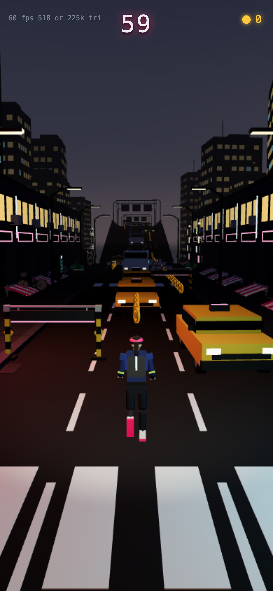
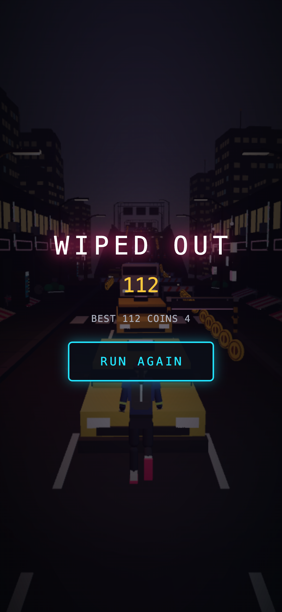

../midnight-dash-floor · 390x844@3x phone · seed 7 · run 1 · ANGLE (Apple, ANGLE Metal Renderer: Apple M5, Unspecified Version) · 2026-09-19T15:43:13.500Z

f0 60 m
9.6 m/s 60 fps
518 draws 224,700 tris
f1 72 m DEAD at 72 m
0 m/s 60 fps
472 draws 195,504 tris